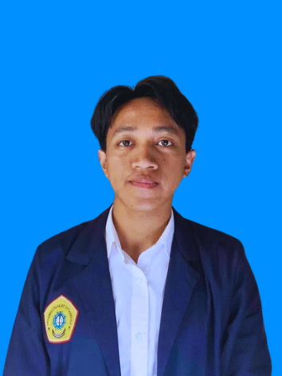

|
 |
Nama | Hawwin Farrel Rakasyah |
| Telepon | 08973917971 | |
| farrelrakasyah@gmail.com | ||
| Alamat | Perum Jade Blok A-15, Krian, Sidoarjo | |
| Deskripsi | Mahasiswa Sistem Informasi yang antusias sama segala hal berbau teknologi. Punya dasar di pemrograman Python dan paham soal hardware komputer. Saya orangnya tekun kalau lagi ngerjain sesuatu dan selalu pengen tahu lebih dalam soal perkembangan dunia digital saat ini. |
| Nama Sekolah | SMK YPM 1 Taman |
| Alamat Sekolah | Jl. Raya Ngelom 86, Ngelom, Kec. Taman, Kabupaten Sidoarjo. |
| Jurusan | Teknik Komputer dan Jaringan |
| Prestasi | Juara 2 Lomba Animasi Tingkat yayasan, Pelatihan jaringan Tower Bersama Group (TBG) |
| Tahun Masuk - Lulus | 2021 - 2024 |
| Nama Universitas | Universitas Trunodjoyo Madura |
| Alamat | Jl. Raya Telang, Perumahan Telang Inda, Telang, Kec. Kamal, Kabupaten Bangkalan, Jawa Timur |
| Jurusan/Prodi | Sistem Informasi |
| Tahun Masuk | 2025 - Sekarang |
| Nama Perusahaan | PT. INDO BISMAR |
| Deskripsi | Penjualan grosir juga retail notebook/komputer, smartphone (IT) |
| Periode | 2023 Februari - 2023 Juni |
| Jobdesk |
|
| Nama Organisasi | Karang Taruna |
| Deskripsi | Membantu kegiatan sosial dan acara warga di lingkungan warga. |
| Divisi/Departemen | PDD |
| Periode | 2021 - Sekarang |
| Jobdesk |
|